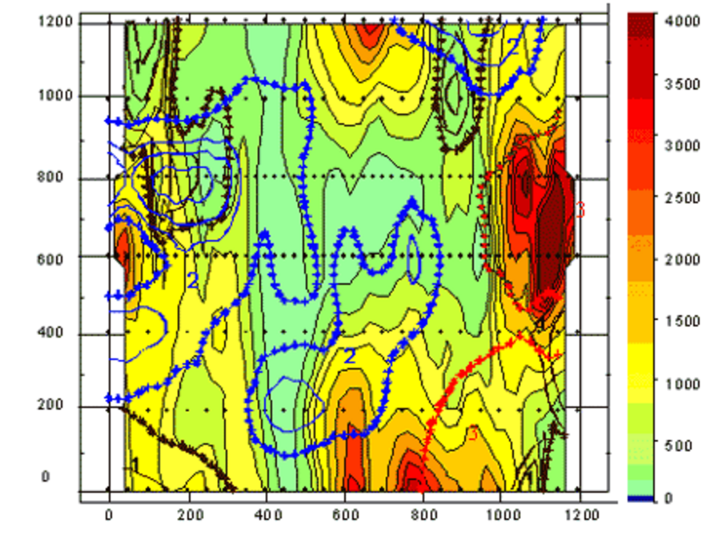
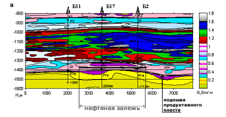
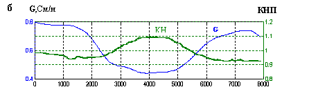
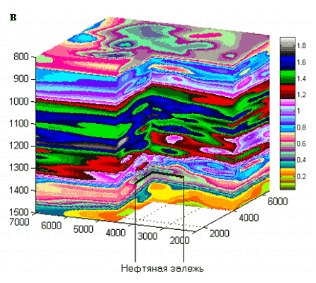

Электроразведка ЭМП-БЗ
Электромагнитные многопараметрические зондирования в ближней зоне сохраняют преимущества как частотной ВРЭ-ВП, так и традиционной «импульсной» электроразведки.
Развитие полевой методики ведётся одновременно с созданием программного комплекса WLF, позволяющего решать полный цикл задач — от проектирования полевых работ и математического моделирования до обработки полевых материалов, расчёта, анализа и графического представления геофизических полей и их геологической интерпретации.
Методика ЭМП-БЗ предназначена в основном для решения нефтепоисковых задач в интервалах глубин от нескольких сот метров до нескольких километров при изменении суммарной проводимости перекрывающих отложений от первых десятков до тысяч сименс. Аппаратно-программный комплекс позволяет применять методы постоянного тока с электрическими датчиками поля и методы частотно-импульсной электроразведки в диапазоне частот до 500 Гц с датчиками произвольных компонент электромагнитного поля.
Программно-методическое обеспечение площадных наблюдений позволяет использовать комплекс и для изучения любых геоэлектрических аномалий, в том числе вызванных неглубоко залегающими объектами, с детальным картированием изучаемых площадей.
Примеры использования

Бешкульское нефтяное месторождение (Астраханская обл.)
Изучение нефтяных пластов в пермско-меловой толще.


